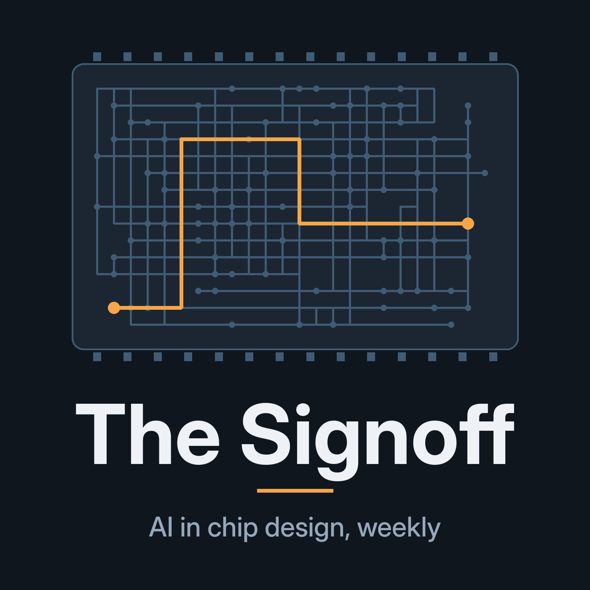

The Signoff
A weekly show about AI in chip design, with a regular stop in verification. Researched and written by Claude, voiced with synthetic speech.
Subscribe: in your podcast app, choose "Follow a show by URL" (or "Add by URL") and paste:
https://marshallversteeg-cloud.github.io/the-signoff/feed.xml
2. Proving nothing changed
Siemens and NVIDIA's agent-run 3D-IC thermal workflow, Cadence's sovereign AI platform and Nokia's 5x claim, VerifierBench on AI-written checkers, an explainer on equivalence checking, and a verification corner on why 100% coverage isn't proof the data was right.
1. Spec to layout: how far can agents get?
GPT-Synopsys, NVIDIA's chip-design partners at SEMICON West, Rambus going company-wide with ChipAgents, a deep dive on Build-A-Chip Bench, and a verification corner on why a passing tool isn't proof of intent.
Researched and written by Claude; voiced with synthetic speech. Sources are listed in each episode's notes.